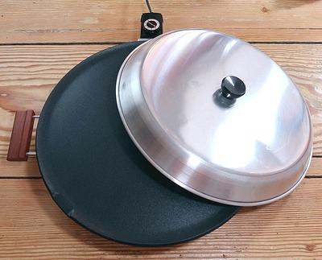

These Injera were made with Anthony's Premium Teff Flour.
The Teff Flour
preferred in Ethiopia is the ivory type which makes a much
lighter colored Injera.

This 16 inch Lefse griddle was used for the example breads. In
Ethiopia, it would traditionally be made on a large clay disk called a Mitad,
over a wood fire. That takes a lot of experience to get the temperatures right.
A regular 12 inch iron skillet would work if well seasoned, or a non-stick pan
of similar size. Whatever pan is used, it must have a cover. I suggest you have
an Infrared Thermometer for accurate temperature control. For details on the
photo pan see our Lefse Griddle
page.
These are my Injera tools. The stainless steel Pitcher holds
4 cups, but a 2 cup size would be sufficient and easier to handle. To take
this "all Teff" bread off the griddle, you need a very wide device, or two
turners like the Oxo examples in the photo. The bread is too tender when hot
to use just one turner.
Day 1, this is the starter before topping with water. The bowl it is
in is way larger than needed, as it will expand little.
Day 4, this is the Starter with the water poured off (it's in a
much smaller bowl now).
Day 4, this is the Base Batter mixed with Starter, leveled out
before topping with water.
Day 7, this is the Base Batter mixed with Absit and given a
couple hours fermentation. It still needed a lot more water to get the right
consistency, so it needed a few more hours fermenting time after that was
mixed in.
Day 7, testing the finished batter. It needs to be quite
pourable, but thick enough to coat fingers well when they are dipped in.